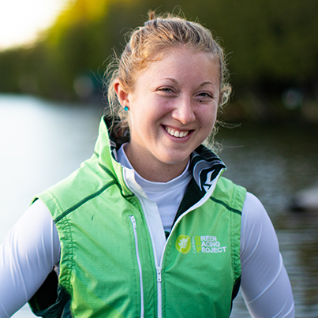
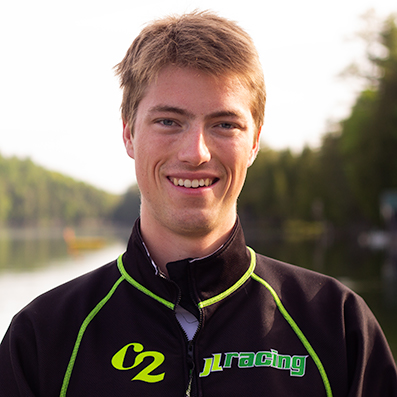
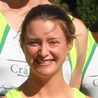
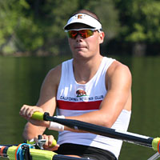
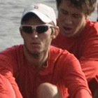
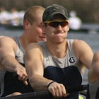
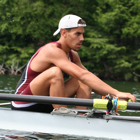
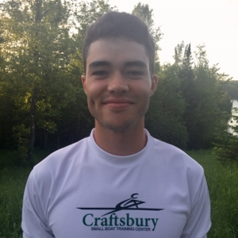
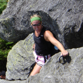
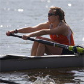

GRP U23 Athletes
Current GRP U23 Bios
Mark Couwenhoven

01/28/1997
University of Maryland Baltimore County/ Penn AC Rowing Association
Biological Sciences
Baltimore, MD
Mark learned to row at Baltimore Rowing Club in Baltimore, MD in the Fall season of 2011. Mark is looking to finish up his degree in Biological Sciences at University of Maryland Baltimore County this incoming spring and is looking to continue his education into Graduate School. Mark comes to Craftsbury under the coaching of Sean Hall at Penn AC Rowing Association, and is both the 2019 Dad Vail Regatta and ACRA National Regatta Champion in the Men’s 1x. Mark enjoys sculling and working with the Craftsbury GRP and looks forward to racing this summer.
Mark Couwenhoven
01/28/1997
University of Maryland Baltimore County/ Penn AC Rowing Association
Biological Sciences
Baltimore, MD
Mark learned to row at Baltimore Rowing Club in Baltimore, MD in the Fall season of 2011. Mark is looking to finish up his degree in Biological Sciences at University of Maryland Baltimore County this incoming spring and is looking to continue his education into Graduate School. Mark comes to Craftsbury under the coaching of Sean Hall at Penn AC Rowing Association, and is both the 2019 Dad Vail Regatta and ACRA National Regatta Champion in the Men’s 1x. Mark enjoys sculling and working with the Craftsbury GRP and looks forward to racing this summer.
Cole Dorsey
12/08/1998
George Washington University
Finance and Economics
Greenwich, CT
Cole attended King School and rowed all four years at Maritime Rowing Club under Yan Vengerovskiy and Dan Walsh in Norwalk Connecticut. He was captain his senior year and won Club Nationals in the U19 Quad in 2016 and placed fifth at Youth Nationals in the U19 quad in 2017. He enjoys bee keeping, snake charming, judging craft almond milk competitions, and was the U12 intergalactic skydiving champion of the universe. He is a rising junior on The George Washington University's Mens heavyweight rowing team. He appreciates the opportunity to scull and be a part of the inspiring community of passionate and smart people at Craftsbury for his first summer on the GRP U23 team.
Cole Dorsey
12/08/1998
George Washington University
Finance and Economics
Greenwich, CT
Cole attended King School and rowed all four years at Maritime Rowing Club under Yan Vengerovskiy and Dan Walsh in Norwalk Connecticut. He was captain his senior year and won Club Nationals in the U19 Quad in 2016 and placed fifth at Youth Nationals in the U19 quad in 2017. He enjoys bee keeping, snake charming, judging craft almond milk competitions, and was the U12 intergalactic skydiving champion of the universe. He is a rising junior on The George Washington University's Mens heavyweight rowing team. He appreciates the opportunity to scull and be a part of the inspiring community of passionate and smart people at Craftsbury for his first summer on the GRP U23 team.
Samuel Gatsos
07/02/1999
Colgate University
Economics, International Relations
New York City, NY
Sam began his rowing career at Berkshire school, where he holds the school's 2k record. He continued to row at Colgate University, where he has helped the V8+ to a record-setting performance at Dad Vails and a Colgate record finish at IRAs. He is hoping to spend this summer at Craftsbury developing as a sculler, training with amazing athletes, and hopefully qualifying for the U.S. national team.
Samuel Gatsos
07/02/1999
Colgate University
Economics, International Relations
New York City, NY
Sam began his rowing career at Berkshire school, where he holds the school's 2k record. He continued to row at Colgate University, where he has helped the V8+ to a record-setting performance at Dad Vails and a Colgate record finish at IRAs. He is hoping to spend this summer at Craftsbury developing as a sculler, training with amazing athletes, and hopefully qualifying for the U.S. national team.
Laura Hegemann
04/14/1997
Rutgers University
Genetics
Falls Church, VA
Laura started rowing in 2012 at her high school, J.E.B Stuart High school. She currently rows at Rutgers University where she just finished her senior year and is returning for her second summer on the GRP U23 Team. Her third favorite color is red and enjoys cooking, being outside, and pasta. She is looking forward to her second summer at Craftsbury.
Laura Hegemann
04/14/1997
Rutgers University
Genetics
Falls Church, VA
Laura started rowing in 2012 at her high school, J.E.B Stuart High school. She currently rows at Rutgers University where she just finished her senior year and is returning for her second summer on the GRP U23 Team. Her third favorite color is red and enjoys cooking, being outside, and pasta. She is looking forward to her second summer at Craftsbury.
Thomas Johnson
08/03/1997
Virginia Commonwealth University
Homeland Security & Emergency Preparedness
Centreville, VA
Thomas began rowing in 9th grade upon his mother's suggestion. He continued rowing in college for the VCU Crew Club. He served as club president his junior year and was re-elected for his senior year. He is returning for his second summer on the GRP U23 team with hopes to gain skills at Craftsbury in order to make it onto the U23 National Team.
Thomas Johnson
08/03/1997
Virginia Commonwealth University
Homeland Security & Emergency Preparedness
Centreville, VA
Thomas began rowing in 9th grade upon his mother's suggestion. He continued rowing in college for the VCU Crew Club. He served as club president his junior year and was re-elected for his senior year. He is returning for his second summer on the GRP U23 team with hopes to gain skills at Craftsbury in order to make it onto the U23 National Team.
Grace Joyce
03/03/1998
University of Wisconsin
Neurobiology and Computer Science
Northfield, IL
Grace rowed for four years at New Trier High School outside Chicago. She attended the US Rowing Junior National Team development camp in 2013 and placed 2nd in the Lightweight 8+ at the 2016 Scholastic Nationals. She is currently rowing for the University of Wisconsin Lightweights, and is six seat in the varsity 8+. Grace is majoring in Neurobiology.
Grace Joyce
03/03/1998
University of Wisconsin
Neurobiology and Computer Science
Northfield, IL
Grace rowed for four years at New Trier High School outside Chicago. She attended the US Rowing Junior National Team development camp in 2013 and placed 2nd in the Lightweight 8+ at the 2016 Scholastic Nationals. She is currently rowing for the University of Wisconsin Lightweights, and is six seat in the varsity 8+. Grace is majoring in Neurobiology.
Mackenzie King
07/30/1997
University of Virginia
Mechanical Engineering
Yardley, PA
Mackenzie returns for a second summer on the U23 GRP and is grateful for the opportunity to continue to develop as a sculler, an athlete, and a person among the inspiring community of Craftsbury. She is a recent graduate of UVA, where she rowed competitively for four years. Prior to Virginia, she was a sweep spare on the 2015 Junior National Team and rowed throughout high school for Swan Creek Rowing Club in Lambertville, NJ.
Mackenzie King
07/30/1997
University of Virginia
Mechanical Engineering
Yardley, PA
Mackenzie returns for a second summer on the U23 GRP and is grateful for the opportunity to continue to develop as a sculler, an athlete, and a person among the inspiring community of Craftsbury. She is a recent graduate of UVA, where she rowed competitively for four years. Prior to Virginia, she was a sweep spare on the 2015 Junior National Team and rowed throughout high school for Swan Creek Rowing Club in Lambertville, NJ.
Jenny McIlvane
06/21/1997
Cape Cod Vocational Tech
Cape Cod, MA
Jenny began sculling at 11 years old on Cape Cod Rowing. Her club team dissolved due to a lack of participation, but she continued to train on her own for a number of years, car-topping her Peinert to various public beaches and lakes and applying what she had learned at Craftsbury during the previous summer. Jenny first came to Craftsbury as a camper in 2011 and has been back every year; first as an intern and most recently as an SBTC athlete this year and last. Having graduated Cape Cod Tech, Jenny has an electrical background and two years toward an electrician's license. Over the past two years, Jenny’s personal best Head of the Hosmer time has gone from 12:43 to 10:59, and her results away from Craftsbury have improved similarly.
Jenny McIlvane
06/21/1997
Cape Cod Vocational Tech
Cape Cod, MA
Jenny began sculling at 11 years old on Cape Cod Rowing. Her club team dissolved due to a lack of participation, but she continued to train on her own for a number of years, car-topping her Peinert to various public beaches and lakes and applying what she had learned at Craftsbury during the previous summer. Jenny first came to Craftsbury as a camper in 2011 and has been back every year; first as an intern and most recently as an SBTC athlete this year and last. Having graduated Cape Cod Tech, Jenny has an electrical background and two years toward an electrician's license. Over the past two years, Jenny’s personal best Head of the Hosmer time has gone from 12:43 to 10:59, and her results away from Craftsbury have improved similarly.
Rhiannon Mulligan
11/13/1997
Wellesley College
International Relations - Economics
Santa Cruz, CA
Rhiannon started rowing her junior spring (2015) at Los Gatos Rowing Club after playing varsity and club volleyball throughout high school. Rhiannon just finished her sophomore year at Wellesley College, placing second at NCAAs in 2018 and third in 2017. She is returning for her second summer on the GRP U23 Team. In 2018, she was a member of NEWMAC’s Boat of the Week and received NEWMAC Academic All-Conference Honors. Her favorite color is blue and she once had thumb blister shaped like California or New Jersey, depending on who you ask.
Rhiannon Mulligan
11/13/1997
Wellesley College
International Relations - Economics
Santa Cruz, CA
Rhiannon started rowing her junior spring (2015) at Los Gatos Rowing Club after playing varsity and club volleyball throughout high school. Rhiannon just finished her sophomore year at Wellesley College, placing second at NCAAs in 2018 and third in 2017. She is returning for her second summer on the GRP U23 Team. In 2018, she was a member of NEWMAC’s Boat of the Week and received NEWMAC Academic All-Conference Honors. Her favorite color is blue and she once had thumb blister shaped like California or New Jersey, depending on who you ask.
Nathan Phelps
09/29/2000
Princeton University / Maritime Rowing Club
Undecided (Economics or Art History)
Ridgefield, CT
Nathan picked up rowing his sophomore year of high school at Maritime Rowing Club and has been rowing year round ever since. After three years at MRC, Nathan was elected captain of the Men's heavyweight team for his senior year. His boat went undefeated for his entire senior year, winning notable regattas such as HOCR, SDCC, Youth Regionals, and Youth Nationals in the quad. The summer before college he stroked the Men's 4x at the Junior World Championships, placing tenth overall. After high school, Nathan went on to Princeton University to continue his studies of both books and the way of the blade. Nathan's favorite hobby is dressing fist sized rocks with small paper outfits and googly eyes.
Nathan Phelps
09/29/2000
Princeton University / Maritime Rowing Club
Undecided (Economics or Art History)
Ridgefield, CT
Nathan picked up rowing his sophomore year of high school at Maritime Rowing Club and has been rowing year round ever since. After three years at MRC, Nathan was elected captain of the Men's heavyweight team for his senior year. His boat went undefeated for his entire senior year, winning notable regattas such as HOCR, SDCC, Youth Regionals, and Youth Nationals in the quad. The summer before college he stroked the Men's 4x at the Junior World Championships, placing tenth overall. After high school, Nathan went on to Princeton University to continue his studies of both books and the way of the blade. Nathan's favorite hobby is dressing fist sized rocks with small paper outfits and googly eyes.
Liza Ray
06/05/1997
Columbia University
Psychology
Miami, FL
Liza began rowing in high school at MAST Academy in Miami, winning her team's Oarswoman of the Year award all four years. She was recruited to race Columbia University where she is a rising senior studying psychology. Liza has raced in the Varsity 8+ all three years at Columbia and was a member of the U23 Lightweight Women's Quadruple Sculls in 2018. She joins Craftsbury this summer with her boat mate from last year's quad, Grace Joyce, to race in the U23 Lightweight Double Sculls.
Liza Ray
06/05/1997
Columbia University
Psychology
Miami, FL
Liza began rowing in high school at MAST Academy in Miami, winning her team's Oarswoman of the Year award all four years. She was recruited to race Columbia University where she is a rising senior studying psychology. Liza has raced in the Varsity 8+ all three years at Columbia and was a member of the U23 Lightweight Women's Quadruple Sculls in 2018. She joins Craftsbury this summer with her boat mate from last year's quad, Grace Joyce, to race in the U23 Lightweight Double Sculls.
Jack Reid
10/08/1997
Trinity College
English
Deerfield, NH
Jack learned to row at Friends of Concord Crew in Concord NH during the fall of his sophomore year in high school. Jack was eventually recruited to row for Trinity College and has been a two year member of the varsity boat. After Jack’s freshman year, he rowed for the New York Athletic Club, where he competed at Club Nationals, Canadian Henley, and Independence Day Regatta. Now after his junior year of college, Jack is returning to row on Craftsbury’s U23 GRP Team for his second summer.
Jack Reid
10/08/1997
Trinity College
English
Deerfield, NH
Jack learned to row at Friends of Concord Crew in Concord NH during the fall of his sophomore year in high school. Jack was eventually recruited to row for Trinity College and has been a two year member of the varsity boat. After Jack’s freshman year, he rowed for the New York Athletic Club, where he competed at Club Nationals, Canadian Henley, and Independence Day Regatta. Now after his junior year of college, Jack is returning to row on Craftsbury’s U23 GRP Team for his second summer.
Archived GRP U23 Alumni Bios
Walter Banfield, 2014 U23
May 2, 1995
Dartmouth College
Undecided
Wake, VA
Walter rowed in high school for Christ Church School in Southern Virginia. He rowed for the Junior Worlds Development Team in 2012 in Berlin Germany in the summer going into his senior year. The following year Walter made the Junior U.S. National Team in the men's 1x where he placed 10th overall at Junior Worlds. He now rows at Dartmouth as a lightweight, where he raced in the first varsity eight during the spring season. Walter has been working in the gardens at the center as well as helping with the community rowing.
Taylor Beach, 2015
May 16, 1994
University of Southern California
Business Administration—Entrepreneurship, English Literature
Los Angeles, CA
Taylor started rowing at the University of Southern California as a freshman walk-on. He has won 14 of 15 seat races in his 3 years of rowing and once claimed that he liked erging. His personal record for number of Costco pizza slices eaten is 10. He finished 7th in his Fantasy Football League this year and he prefers sunsets to sunrises. Taylor hopes to top his Costco pizza record by eating 11 Craftsbury pizza slices.
Ned Benning, 2015
January 28, 1993
Cornell University
Natural Resources
Weston, MA
Ned started rowing in high school. He rowed in the mens quadruple sculls at the 2011 Junior World Championships placing 10th. Ned has spent three seasons in the Cornell Varsity 8. He rowed the mens four at the 2013 U23 World Championships placing 3rd. When not rowing, Ned enjoys watering his house plants, riding his family's horses Athos and Patriot, and solving crossword puzzles.
Joshua Bilchik, 2018
03/15/1996
Bates College
Sociology and Ceramics
Brookline, MA
Josh started rowing in the winter of his junior year of highschool when his friend waltzed into the pottery studio and asked him how much he weighed. He is the founder of A Pop Shoppe Training Center and also has an awesome Pokemon card collection; please ask him about it. He is very excited to represent the u23-GRP this summer.
Alex Burjakowsky, 2010 U23
Newport Aquatic Center
Irvine, CA
Notable Results: Alex was part of the Newport Aquatic Center 8+ which won the 2009 U.S. Rowing Youth National Championships.
Summer 2010: Unlike most of the SBTC rowers, Alex and his lightweight double partner Nick Trojan didn't come to Craftsbury until after they had already won U23 trials. "We knew of Larry [Gluckman] through the Graves brothers, and when we met him at Trials he pretty much took us under his wing and sent us up to Vermont the night after we finished racing." After training on Big Hosmer for a few weeks, the double won the D Final in Belarus. Alex said, "My experience at Craftsbury was amazing. The SBTC group really helped improve my sculling, and it was a very special experience to spend the summer there."
Katie Burke, 2011
Duke
Lutz, FL
W1X/2X
5'9", 160lbs
7:17
Notable Results: 2010 Head of the Hooch - W1x open, first place 2010 Head of the Hooch - W2x, second place 2010 Head of the Hooch - W4x, first place 2010 US Rowing Collegiate Championship, 4x, second place 2009 U.S. Junior National Team, 2x
Mary Carmack, 2014
December 25, 1993
Harvard University '16
Electrical Engineering
Veazie, ME
Mary learned to row her freshman year of college as a walk-on. She rowed in Radcliffe's first varsity eight throughout her sophomore year, earning bronze at the 2014 Ivy League Championships and placing 11th at the NCAA Championship. She is excited to learn as much as she can about sculling at Craftsbury, and looks forward to helping out in the gardens and with other outdoor projects.
Monique Carter, 2011
Michigan State
Queens, NY
W1X/2X
5'11", 160lbs
7:03
Notable Results: 2009: Rowed as a member of the varsity eight in all seven races, sitting at the six and four seats. Helped the varsity eight to a first-place finish in the petite finals at the NCAA Regatta. Member of the varsity eight crew which took first at the Big Ten Championships in a time of 6:06.30. Helped lead the varsity eight to a pair of victories at the Big Ten Double Duals. Helped the varsity eight to an open water victory over No. 20 Notre Dame.
Peter Chatain, 2018
11/08/1999
Stanford University
Theoretical Physics and Artificial Intelligence
Winnetka, IL
Peter rowed four years at New Trier and was elected team captain as a senior. Highlights of his NT career in the V8+ include: Bronze medals at Head of the Charles in 2016 and 2017; SRAA champion in V8+ in 2016; SRAA second place in 2017 and 2018.
Rowed 2 seat (right behind Clark Dean) in the 4+ that was sixth at junior Worlds in Lithuania.
He also played hockey for 7 years growing up, ending as the JV league high-point scorer in freshman year. After that, he hung up his skates to concentrate on rowing.
Peter helped care for his parents' suburban back-yard chicken flock for two years, doing tasks such as killing and cooking their one rooster that would wake everyone up at 4:30 am
Michael Clougher, 2013
January 6, 1993
Connecticut College
Math and Computer Science with a minor in Economics
Canton, MA
Michael is a two-sport athlete at Connecticut College, competing on the varsity basketball team in addition to rowing. He began rowing his junior year of high school (2010) at Thayer Academy. While at Connecticut College he has made the All-NESCAC second team in 2013 and was All-Academic winter/spring seasons for 2012-2013. At the Center Michael has been helping out in the gardens and kitchen as well as coaching for the Community Rowing Program.
Spencer Crim, 2009 Development
Spencer Crim, 2009 Development
Spencer learned to row at Colby College in Waterville, Maine. He said, "I came to the SBTC group after U23 trials in July 2009 and there was immediate focus on gaining speed. We did physiological testing to determine our VO2 max and did plenty of training on the water. Spreading our time between singles, doubles, quads and pairs, we all gained in our boat feel and improved our ability as boat movers... I am extremely fortunate to have benefited from such a highly focused and performance oriented environment with SBTC group at Craftsbury."
Catherine Crowley, 2011
MIT
New York City, NY
W1X
5'8", 167lbs
7:25
Notable Results: A member of the varsity 8+ my freshman year that won MIT's first Division I race. Stroked the varsity 8+ last year to a fourth place finish at patriot league and was named to the 2010 First-Team All-Patriot League, and sat 7 seat in the Varsity 8+ that won its first cup race against BC this season.
Alycia Da'Loia-Moore, 2011
Boston College
Bronx, NY
W1X
5'6", 143lbs
7:13
Notable Results: Was the Jr. Women's 1x that competed at Jr World Championships in Prague, CZ last summer and came in 10th. Came in 2nd at USRowing Youth Nationals and Scholastic Nationals in the W1x. 1st Place at USRowing Northeast Regionals in the Women's 1x. I am currently sitting 6 seat in the V8+ for Boston College. Came in 2nd at the Jesuit Invite March 2011, beating Georgetown and Loyola.
Ben Dann, 2011
Brown
Pound Ridge, NY
M1X/2X
5'10", 187lbs
Sub 7
Notable Results: 5th - 2011 IRA Men's V8. 9th - Men's 4+ at 2010 U23 Worlds
Ben Davison, 2015
July 24, 1996
University of Washington
Biology
Durham, England
Ben started rowing in his freshman year of high school when he realized he wasn’t good enough at other sports. He has just finished his freshman year at the University of Washington. His proudest sporting achievement was coming in third in this years annual turkey trot. He enjoys working outdoors around the center and spends most of his time cutting wood.
Drake Deuel, 2017
Drake began rowing as a freshman in high school with Dallas United Crew in Texas in the fall of 2013. With DUC, Drake raced at USRowing Youth Nationals in 2015 in the 4+, finishing 6th and in 2016 in the 8+, finishing 14th. After an introduction to sculling at Narragansett Boat Club in the summer of 2016, Drake competed at trials for the Junior World Championships in the 2X but he and his partner fell short. He is a lightweight rower and part of the Harvard class of 2021, hoping to succeed with Craftsbury and give back to the center. In his spare time Drake enjoys reading, collecting fountain pens, and playing video games.
Elizabeth Donald, 2010 Senior/Development, 2010 U23
Elizabeth Donald, 2010 Senior/Development, 2010 U23
University of Pennsylvania and Community Rowing Inc. (CRI)
Falmouth, MA
Notable Results: At 2009 US Rowing Club Nationals, Elizabeth won both the senior and intermediate double. She also finished second in the U23 double at Canadian Henley in both 2008 and 2009.
Summer/Fall 2010: Elizabeth and her sister, Rebecca, came to Craftsbury to train in the double with the goal of qualifying for U23 World Championships. Not only did they qualify, but at the Championships in Brest, Belarus, they finished 3rd, one of seven U.S. crews to medal at the event. Following this success, the sisters returned to Craftsbury to train for National Selection Regatta III. Elizabeth says, "I wanted to train alongside very competitive athletes and be pushed continually on the water, both technically and by racing with men. I also wanted the opportunity to work with Coach Gluckman whom we had heard - and can now confirm - is an exceptional coach."
Rebecca Donald, 2010 Senior/Development, 2010 U23
Rebecca Donald, 2010 Senior/Development, 2010 U23

University of Pennsylvania and Community Rowing Inc. (CRI)
Falmouth, MA
Notable Results: At 2009 US Rowing Club Nationals, Rebecca won both the senior and intermediate double. She also finished second in the U23 double at Canadian Henley in both 2008 and 2009.
Summer/Fall 2010: Rebecca and her twin sister Elizabeth joined the SBTC with the goal of qualifying for U23 World Championships in Brest, Belarus. At U23 Trials, they beat a US Rowing Selection Camp boat en route to a solid victory in the double, which sent them to Europe. In Belarus, the twins placed third, earning the SBTC's first-ever medal at the Championships. They are now focusing on National Selection Regatta III, where they could be picked for a quad camp which will ultimately determine the boat for Senior Worlds. Rebecca says, "Being able to train next to great athletes has pushed and motivated us. The other SBTC athletes without a doubt contributed to our 3rd place finish at U23's. Training with Coach Gluckman, who is a phenomenal coach, has been the best decision for Liz and me."
Evan Dwinell, 2018
01/24/1998
Dartmouth College
Neuroscience
Tallahassee, FL
Evan began rowing in 2011 at Capital City Rowing. He was a member of the Junior National Team in 2016, where he placed 4th in the Junior Men’s 4 without coxswain. He also trained for a year under Casey Galvanek at Sarasota Crew after high school before entering Dartmouth College in 2017. Evan enjoys stargazing and has 8 dogs.
Maggie Fellows, 2013
May 3, 1991
St. Lawrence University, class of 2013
Environmental Studies and Multi-Language
Warwick, MA
Maggie came to Craftsbury in May after graduating from St. Lawrence where she rowed in the Varsity eight all four years, including in the team's 2010 bid to NCAAs. She earned All-American and All-Conference honors in 2013. Maggie learned to row in her junior year of high school at Northfield Mount Hermon. At Craftsbury she helps out with the Farm to Table work, Community Rowing and in the kitchen.
Michalina Fili, 2015
October 21, 1992
Washington College (MD)
Biology
Sparks, MD
Michalina was a walk-on rower at Washington College. She was a two-sport athlete freshman and sophomore year, playing soccer in the fall and rowing in the spring. Her junior year when she decided to dedicate herself to rowing. The rest is History. She loves caring for the farm animals here at Craftsbury. She has enjoyed exposing myself to new experiences, opportunities, and meeting new people.
Brian Frake, 2012 U23
Dartmouth College
Oceanport, NJ
L2X
6'0", 155lbs
6:23
Notable Results: EARC Sprints finalist in second varsity lightweight 8 during the 2011 and 2012 seasons and in the freshman lightweight 8 during the 2010 season. Finalist at the 2010 Royal Canadian Henley Regatta in the Pennsylvania Athletic Clubos Senior Men's Quad.
Erik Frid, 2014 U23
Ithaca College
Documentary Studies and Production
Madbury, NH
Erik learned to row at Great Bay Rowing in Durham, New Hampshire. He rowed four years for the Ithaca College Bombers, serving as co-commodore his senior year. His collegiate highlights include a 2011 ECAC bronze medal in the Freshman 8, a 2012 New York State Championship, and a school best 4th place finish in the 2014 ECAC Varsity 8 Grand Final. At Craftsbury Erik has helped with maintaining the grounds and Community Rowing program, but also hopes to find a way to use his knowledge of film and photography to benefit the center.
Lenny Futterman, 2013, 2012, 2011
Lenny Futterman, 2013, 2012, 2011
July 2, 1992
Boston University '14
Political Science, Classic Civilizations Minor
New York, NY
Lenny returns to the SBTC for his third consecutive year. He represented the US with Craftsbury in 2011 in the men's U23 2x. He has also won the Senior 8+ and 4- at Club National Champs and placed 5th in Freshman 8+ at 2011 IRA's, 6th in the V8 at 2012 IRA's and 2013 EARC Sprints in his first three years at BU.
Lenny's favorite projects from his time at the Center have been working in the gardens and especially helping out with the Community Rowing program.
Marilyn Garberg, 2017
School: University of Wisconsin
Marilyn is originally from Bellevue, WA, and began rowing during her freshman year of high school with the Sammamish Rowing Association. She was recruited to row for the University of Wisconsin Lightweight Rowing team. Her freshman year she won the 2016 IRA National Championship title with the lightweight four. Marilyn looks forward to improving her sculling skills and working outdoors at Craftsbury. Outside of rowing, she enjoys skiing, music, traveling, and photography.
Shiann Gardner, 2015
May 31, 1996
Michigan State University
Animal Science, PreVet
Cambridge, MA
Shiann started her rowing career at her high school, Cambridge Rindge and Latin School. She later joined the CRI competitive girls team, where she rowed in the 1st Varsity 8 and competed at Youth Nationals. She was recruited to row at Michigan State University where she rowed in the 1st Varsity 8, JV 8, and V4. She enjoys working outside, and hopes to help with the gardens and kitchen at Craftsbury.
Dylan Gould, 2011
Cornell
Riverhead, NY
ML2-
6'2", 165lbs
6:29
Notable Results: 1st place 2010 Eastern Sprints Lightweight Freshmen Eight.
John Graves, 2010 U23, 2009 U23
John Graves, 2010 U23, 2009 U23
Trinity College
Cincinnati, OH
Notable Results: In 2009, John competed in the pair at U23 World Championships. In the 2010 season with Trinity, his crew won the San Diego Crew Classic Cal Cup Championship, as well as the silver medal in the ECAC National Invite. John received the 2010 McCook Trophy, which recognizes the top senior male athlete at Trinity College.
Summer 2010: John's summer at Craftsbury didn't start off well: he arrived with double partner Will Kelly, who immediately injured his back and had to go home, giving up rowing for the summer. No matter: John decided to row in a single and, more impressively, turn lightweight just a few weeks before U23 trials. The gamble paid off and he posted a big win at trials, earning a spot on the squad for U23 World Championships in Belarus. At U23's, John rowed some strong heats, ultimately finishing 5th in the B Final of the lightweight single. His 11th-place overall finish was the best ever recorded for a U.S. lightweight sculler. John finished his summer season with the SBTC by rowing in a pair with his brother, Peter, and in an eight at Canadian Henley.
2009: Since his arrival at Trinity College in the fall of 2006, rowing has been half of John's athletic experience: he was on the varsity soccer team, starting every game in four seasons, becoming captain, and achieving All-League Honors in 2009. However, rowing is his true passion. In 2008, he rowed bow of the ECAC Champion Trinity 8+ that went on to win four races at Henley before falling short in the Finals. In 2009, John trained with the SBTC before competing at U23 World Championships in the pair with Eli Roxby. John said, "Eli and I were products of the daily routine at the Center which injects purpose, friendship, and of course, really good food into the athletes and employees. Craftsbury understands the needs of an elite athlete and does a fantastic job outfitting the facilities and creating programming from an athlete's perspective."
Peter Graves, 2010 Senior/Development, 2009 Development
Peter Graves, 2010 Senior/Development, 2009 Development
Trinity College
Cincinnati, OH
Notable Results: Peter won the Champ Double at the Head of the Charles Regatta in both 2008 and 2009, and represented the U.S. at World Championships in Poland in 2009. Most importantly, though, he is the current record-holder in the Head of the Hosmer, with a time of 10:11.
Summer/Fall 2010: Peter and his brother, Tom, were hoping to win U.S. Nationals in the double and be selected for Senior Worlds. However, things didn't go according to plan, and they finished second. Regrouping, they returned to Craftsbury, where they had done some quality training the year before. While the ultimate goal is still to go to Worlds in some boat, or at least next year, Peter claims that his goal is "to row 2,000 meters 13 seconds faster than I did in May 2010 in the double." Peter competed with his brother John in the Champ Pair at Canadian Henley, and stroked the SBTC 8+ which finished a heartbreaking 4th in its heat of the Champ 8, missing the final by 0.5 seconds.
Peter & Tom Graves
(see also Tom's and Peter's 2010 senior profiles) While we don't want to imply that Tom and Peter are not independent people, but as Peter told Rowing News, "We are better together, whatever it is, it's like 2 + 2 = 5." The brothers weren't afforded much time with the SBTC and came and left as an extremely focused double - the previous year, they finished 2nd at U.S. Olympic Trials, just missing a ticket to Beijing. They first arrived before 2009 senior trials, and trained with coach Larry Gluckman before racing in Princeton. At trials, Tom and Peter got down to business and won a very tough best-of-three race series, meaning that they were selected to race at World Championships in Poland. Just before that trip, they returned to Craftsbury to dial in their training, believing that Craftsbury had provided the magic for their success. In their time with the SBTC, Tom and Peter also won the Canadian Henley 2x, and they went on to win the Head of the Charles Championship Double. Peter said: "Life seems to be getting busier all the time. Craftsbury fixed that. When we arrived in Craftsbury, Tom put the car in park and shut off the engine. It became nice and quiet in the car. I opened the door and stepped outside for the first time... it was even more quiet. This is a very important aspect of Craftsbury for me. I instantly felt a sense of focus, purpose, and direction."
Tom Graves, 2010 Senior/Development, 2009 Development
Tom Graves, 2010 Senior/Development, 2009 Development
Trinity College, Bantam Boat Club
Cincinnati, OH
Notable Results: Tom started out his string of remarkable results all the way back in 2001, when he won the Youth National Championship 8+. Since then, he has rowed with crews which have won races at Henley, U.S. Nationals, Canadian Henley, Head of the Charles, and many others. Tom and his brother finished second at the 2008 Olympic trials, but made up for it the next year by earning a spot at World Championships.
Summer/Fall 2010: After a frustrating weekend of racing at U.S. Nationals, Tom and Peter came to Craftsbury to try to get the magic back in their double. So far, it seems to have worked: they posted a huge victory in the senior double at Canadian Henley. Tom said of that effort, "We were able to get back to our rowing and it all came together. We just let all of the negatives fall away and just raced hard! This summer has been tough, but we are learning from each experience and it builds our confidence for the next step." His goal is still to make the 2010 World Championship team in New Zealand.
Molly Hamrick, 2012 U23
Princeton University
Tampa, FL
W2X
5'9", 165lbs
6:58
Notable Results: 2010: 2nd place EAWRC WV8, 3rd place NCAA WV8, 2011:EAWRC and Ivy Champs in WV8, Rowed at Women's Henley and Henley Royal.
Phil Henson, 2012 Senior
Dartmouth College
Somerset, NJ
ML2-
6'3", 160lbs
Notable Results: Finished 2nd at EARC Sprints in 2011 with the Dartmouth Varsity Lightweights, finished 2nd at Elite Nationals 2011, Competed on the u23 US National team after winning the 2011 trials in the pair.
Henry Hoffstot, 2012 U23
Georgetown University
Ligonier, PA
M2-
6'5", 190lbs
Notable Results: 7 Seat of the Georgetown Freshman 8 finishing 5th at the EARC Sprints 2010, Henley Royal Regatta 4+. 7 seat of the Georgetown V8 Finishing 12th at the IRA National Championships 2011. 6 seat of the Georgetown V8 for the 2012 season.
Ricky Holak, 2012 U23
Worcester Polytechnic Institute
Windham, NH
M2-
6'5", 195lbs
Six oh slow
Notable Results: 1st place Collegiate 4+ Head of the Charles Regatta, 1st place 8+ US Club Nationals.
John Hood, 2010 Senior/Development, 2009 U23
John Hood, 2010 Senior/Development, 2009 U23
Rollins College
Apopka, FL
Johnny Hood was a member of Craftsbury SBTC during 2009 and 2010. As a member of SBTC, he competed mostly in the single events such as the U23 trials, Canadian Henley,
and USRowing National Championships. Johnny rowed at Rollins College and, since graduating, has coached high school, collegiate, and masters rowers. Johnny continues to scull at Orlando Rowing Club.
Tom Jennings, 2010 Senior/Development
Tom Jennings, 2010 Senior/Development
Colorado State University
Boulder, CO
Notable Results: This summer, Tom rowed with the Atlanta Rowing Club. At US Rowing Club Nationals, he finished 2nd in the Intermediate Quad and 3rd in the Intermediate Double.
Summer/Fall 2010: Tom is the most recent addition to the SBTC squad. He says, "I want to keep making progress in the single. Also, I'd like to make a good showing at the Head of the Charles and, potentially, fall speed orders. I feel that the intimate and dedicated training environment will help me make strides in sculling. Most importantly, I'd like to grow a gnarly beard in preparation for the long dark winter."
Ashley Johnson, 2017
School: Syracuse University
Ashley began rowing in 8th grade at Mt. Baker Crew in Seattle, WA and then moved to Buffalo, NY and rowed at West Side Rowing Club for the remainder of high school. Ashley was recruited to row for Syracuse University where she stroked the 2V8+ her freshman year. She spent the summer of 2015 rowing for the PNRA/Mercer U23 camp. In both her sophomore and junior year she was bow seat in the 1V8+ at Syracuse.
Ben Johnson, 2010 U23
Worcester Polytchnic Institute
Northford, CT
Notable Results: In the 2009-10 season with WPI, Ben rowed in the varsity 8+ to finishes of 4th in the Head of the Charles and 3rd at New Englands.
Summer 2010: Ben arrived in Craftsbury with pair partner Hank Moore and a goal of representing the U.S. at U23 World Championships. After a short time training with Coach Gluckman, the pair won USRA Collegiate Championships. That race prepared them well for U23 trials, which they also won. In Belarus, Hank and Ben finished 12th overall in the open pair. They then finished their season at Canadian Henley, competing in the Champ Pair and the Champ 8+.
Karli Kirk-Goerke, 2016
3/4/1995
Hometown: Alpine, TX
School: Stanford University
Major: Biomechanical Engineering
Karli walked on to the Stanford Women's Rowing team her sophomore year of college. In her free time, she enjoys painting, cycling, and watching the x-files. She is interested in caring for animals and clearing the lake of invasive species during her summer at Craftsbury.
Josh Konieczny, 2012 U23
Dartmouth College
Milbury, OH
L2X
5'11", 155lbs
6:11
Notable Results: Finished 2nd at EARC Sprints in 2011 and 2012 with the Dartmouth Varsity Lightweight Eight, 2nd at the IRA National Championship in 2012.
Katy Kroll, 2010 U23
University of Iowa
Waterford, WI
Notable Results: Competed in the Iowa first varsity 8+ which finished first in the petite final at Big Ten Championships and third in the petite final at Central regionals in 2010; CRCA All-Central second team selection.
Summer 2010: Katy and her pair partner, Jess Novack, came to Craftsbury three weeks before U23 trials. Coach Gluckman praised their work ethic and learning curve; after a week of remedial work in the pair, they were ready to train in earnest. At trials, the pair finished 3rd behind a strong US Rowing entry and a boat from Wisconsin.
Claire Kuehnel, 2011
Boston University
W1X/2X
5'10, 155lbs
Notable Results: Stroked the V8+ in the fall and spring; 2nd - 2010 USRowing Club Nationals Senior W2x
Kyle Lafferty, 2012 Senior
Bucknell University
Hockessin, DE
ML2-
6'1", 160lbs
Notable Results: Won the 2011 Senior World Championship trials in the ML2-, and competed in Bled with the US team.
Emily Lane, 2017
School: University of New Hampshire
Major: Sustainable Agriculture and Food Systems/EcoGastronomy
Emily started rowing her freshman year at Bedford High School. There she was captain for two years, and was also a member of the varsity swim team. Emily walked onto the University of New Hampshire women's rowing team in 2015, and stroked the women's varsity 8. Her sophomore year she biked across the United States while building homes for affordable housing projects. Emily stroked the women's 4+ in the Head of the Charles and won gold representing UNH. Emily is currently dual majoring in Sustainable Agriculture and Food Systems as well as EcoGastronomy. She hopes to contribute to a more sustainable food system at Craftsbury this summer!
Maddie Lips, 2013 U23, 2012 U23
Maddie Lips, 2013 U23, 2012 U23
March 5, 1992
Yale University
Political Science
Parker, CO
W1X
5'9", 150lbs
Notable Results: In 2011, raced in the Yale V8+ that placed 4th at EAWRC Sprints and 8th at the NCAAs. Placed 2nd in the 8+ at the 2010 Junior Worlds. Placed 1st in the women's 1x at Youth Nationals 2010.
Maddie learned to row at Mile High Rowing Club in Denver, Colorado. In high school, she won the women's single event at the 2010 Youth Nationals, and won a silver medal in the women's 8+ at the 2010 Junior World Championships. At Yale, she has rowed in the varsity 8+ since joining the team, most recently placing 2nd at the 2013 Ivy Championships and 11th at the 2013 NCAA Championships. She represented the US in the women's single at the 2012 U23 World Rowing Championships where she placed 15th. She was named a CRCA Scholar Athlete in 2012 and 2013, and received CRCA first team All-New England selection in 2012. She was recently elected captain at Yale for 2013-2014. She is very excited to be spending another great summer in Vermont at the best sculling center around!
Lawrence Lopez, 2013
Yale University 2014
Political Science
Cos Cob, CT
Lawrence started rowing his freshman year (2007) at Brunswick School. Following a successful spring season in 2009 his crew travelled to England to compete in the Henley Royal Regatta where they reached the semi-finals of the Princess Elizabeth Cup. His senior year at Brunswick, Lawrence was voted captain of the rowing team. He was then recruited to Yale and is currently heading into his senior year. Lawrence is looking forward to competing for Craftsbury this summer while simultaneously helping the program reach its mission of environmental sustainability
Amy Ludovici, 2014
March 2, 1993
Syracuse University
Health and Exercise Science
Binghamton, New York
Amy began rowing her freshman year at Syracuse as a walk-on. She was in the V4+ that took gold at the Big East Championships and has been in the Varsity 8+ the following two years. Since she began at Syracuse, the team has progressed from finishing 21st in the nation in both 2012 and 2013 to finishing 19th in 2014. Last summer she trained with the US Pre-Elite Camp in Syracuse, NY. This summer she is excited to learn about and assist in sustainable gardening!
Sidney Michalak, 2017
Hometown: Peterborough, NH
School: University of New Hampshire
Major: Mechanical Engineering
Sydney began her rowing career in 2014 as a freshman at the University of New Hampshire. Prior to college, she was an avid triathlete and nordic skier, enjoying Thanksgiving break skiing at Craftsbury. Since taking her first strokes in the UNH barge and discovering her passion for rowing, Sydney has progressed to winning Head of the Charles 2015 in the collegiate 4+, and placing 3rd in 2016. She also finished 2nd at club nationals in the varsity 8, and was named to the first All-American boat. At the Knect Cup her junior year, Sydney made a debut 2k race in a small boat, finishing 2nd in the 2 -. This summer at Craftsbury, she is incredibly excited to build off this performance, and increase her skills in a small boat. Off the water, Sydney is looking forward to applying her Mechanical Engineering skills to practical situations, gardening, coaching, and simply being away from technology.
Kate Miller, 2014, 2013
UCLA
Psychology
Walnut Creek, CA
Kate Miller is returning for her second summer in Craftsbury's SBTC program. She just completed her Junior year at UCLA where she is a Psychology major. She rowed in the V8 that won the petite final at NCAAs in 2014 and won the C finals at the 2014 NCAA championships. After learning to scull here in VT last summer, Kate went to Canadian Henley with Craftsbury at the end of last summer earning silvers in all events she raced (single, double, and pair). She is thrilled to be back and cannot wait to see what this summer has in store.
Nicholas Montalvo, 2017
Hometown: Miami, FL
School: University of Wisconsin
Major: Economics
Nick was inspired to row by his dad, who rowed in college and won 2 IRA championships, and grandfather to start rowing in the 7th grade. Nick rowed in high school for Miami Rowing Club in Miami, FL. Nick placed 3rd at Youth Nationals in the lightweight 2x and has medaled 14 times at Club Nationals. He also placed 13th in the BLM2X at the 2016 U23 World Championships. He is currently rowing for the University of Wisconsin and studying Economics.
Brooke Mooney, 2016
Hometown: Peru, VT
School: University of Washington
Major: Medical anthropology
Brooke started rowing in high school at a sculling camp at Craftsbury. Her senior year of high school she transitioned from training for cross-country skiing to training for rowing. She got recruited to row for University of Washington. Her freshman year she rowed in the 2V getting third place at NCAAs. Her sophomore year she rowed in the winning boat at the Pacific Coast Rowing Championships. When not rowing she enjoys: baking, recreational sports and photography.
Hank Moore, 2011, 2010 U23
Worcester Polytchnic Institute
Jaffrey, NH
M2X-
6'5, 205lbs
Notable Results: Hank stroked WPI's varsity 8+ to finishes of 4th in the Head of the Charles and 3rd at New Englands in the 2009-2010 season. He was selected to the 2010 All-ECAC team.
Summer 2010: Hank and pair partner Ben Johnson started out their season with the SBTC by winning USRA Collegiate Championships in the pair. They next set their sites on U23 World Championships, earning a spot after winning trials in June. At the Championships in Belarus, the pair finished 12th. Hank said of the experience, "This summer at Craftsbury helped me to become a more complete athlete and oarsman. It helped me to develop technically, physically, learn about physiological development, proper dieting techniques, and developing training plans. Rowing for Craftsbury opened my eyes to international competition, and showed me how far I need to develop to compete at that level."
2009: Hank began rowing at Worcester Polytechnic Institute, and spent a short time with the SBTC in 2009. Hank says this of his experience: "SBTC means elite rowing with people who are completely dedicated to the sport. It provides a chance to focus on nothing besides rowing. Eating, sleeping, training - all of it focused on the goal of being faster on the water come racing season. Following this summer's work at SBTC, I got to stroke the varsity boat to its best ever finish in the Head of the Charles Regatta, 4th place."
2011: Hank stroked WPI's varsity 8+ to finishes of 4th in the Head of the Charles and 3rd at New Englands in the 2009-2010 season. He was selected to the 2010 All-ECAC team.
Jess Novack, 2010 U23
University of Iowa
Fort Wayne, IN
Notable Results: Competed in the Iowa first varsity 8+ which finished first in the petite final at Big Ten Championships and third in the petite final at Central regionals in 2010; CRCA All-Central first team selection, and one of only 42 rowers in the country to be named 2010 All-American by the Collegiate Rowing Coaches Association; also Academic All-Big Ten.
Summer 2010: After Iowa finished their spring season, Jess and pair partner Katy Kroll drove to Vermont, arriving three weeks before U23 trials. Hard work improved their rowing quickly, and the girls achieved a third-place finish at trials before returning to the Midwest in advance of the fall season.
Edward O'Neill, 2011
Cornell
Riverhead, NY
LM2x
6'1", 155lbs
Notable Results: 3rd place 2011 Eastern Sprints Lightweight Freshmen Eight 3rd place 2011 IRA in LM4+
Sam O’Brien, 2016
3/20/1997
Hometown: Tampa, FL
School: University of Washington
Major: Business
Sam began rowing his freshmen year of high school because due to time constraints he could no longer waterski. In high school he placed second in the 1x at Junior Nationals. At UW he rowed in the Freshmen 8 that won IRA. He enjoys chopping wood and working outdoors.
Daniel Perez, 2017
Daniel began his rowing career learning to row in Bermuda the summer after his freshman year of high school. He continued his rowing at the Pine Crest School in Ft. Lauderdale, Florida. While in high school he raced the 8+ and 2-. His passion for rowing was able to continue as he went on to do the thing for the Dartmouth Lightweight Men. Daniel also enjoys balling and shooting in the gym with his boys.
Maddie Pont, 2015
March 31, 1996
UCLA
Chemical Engineering
Menlo Park, CA
Maddie started rowing last fall as a freshman at UCLA and is excited to learn to scull this summer. At Craftsbury she enjoys working on the trails and in the kitchen.
Erin Roche, 2012 U23
Boston College
Niskayuna, NY
W1X/2X
5'6", 145lbs
7:11
Notable Results: Won the Jesuit and Irving-Christianson Cup. Finished 5th in the grand final at Knecht Cup.
Sarah Kate Rogers, 2016
11/14/1997
Hometown: Oak Ridge, TN
School: Boston University
Major: Biomedical Engineering
Sarah Kate started rowing in 2010 at Atomic Rowing. In 2015 she had a brief stint on her own, where she spent most of her time on the erg and in a single. She once believed she would die if she had to scull, but has really come to terms with small boats. That first year, she placed 6th in the 1x at Youth Nationals, and repeated that performance this year, along with a 10th place finish in the 2-. Beyond rowing, she enjoys cooking and is nervous to see how she will fare without a kitchen as she continues to Boston University and their lightweight team. She looks forward to getting fast and rowing a lot. She hopes to get involved with something nature-y or food related.
Eli Roxby, 2009 U23
Eli started rowing in Philadelphia for Conestoga High School where he sculled for four years. Next, he rowed for Trinity College, which included a trip to Henley and an ECAC varsity eight gold medal. After graduation, Eli rowed for the Green Racing Project at Craftsbury where he competed in the Under 23 Championships in Czech Republic in the pair. Eli recently has returned from a six month trip in South America, where he was traveling and working on organic farms. He looks forward to sharing his passion for rowing with others this summer at Craftsbury.
Shay Seager, 2010 Senior/Development, 2009 Development
Shay Seager, 2010 Senior/Development, 2009 Development
University of California, Berkeley
Incline Village, NV
Notable Results: Shay has accomplished a lot since leaving Craftsbury last December. Her Cal varsity 8+ won the Pac-10 Championships and finished 4th at NCAA Championships, helping the team to a second-place overall finish.
Summer/Fall 2010: Shay returned to Craftsbury partway through the summer to join Emily Dreissigacker in a double. Shay and Emily will be traveling to National Selection Regatta 3 to attempt to make the quad camp for Senior Worlds. Shay's goal is to ultimately row in the next Olympics.
2009: Shay started rowing at the University of California, Berkeley, in the fall of 2008, and spent the spring of 2009 in Cal's second varsity boat. After arriving in Craftsbury, she became an expert sculler, winning the Head of the Fish, finishing 7th in the Head of the Charles Club Single (without a buoy penalty she would have finished 5th), and qualifying for and attending the US Rowing ID selection camp in fall 2009. Shay said, "I know that all of the success I had this fall is because of Craftsbury: because I had so many people surrounding me that supported and believed in me; because I had the best training facility and Coach Larry Gluckman to optimize my workouts; and because I was training with competitive elite teammates."
Brett Simpson, 2014
August 10th, 1993
Princeton University
English
Kenwood, CA
Brett Simpson just finished her sophomore year at Princeton University where she is pursuing an English major with a certificate in creative writing. Brett grew up in Kenwood, CA and starting rowing her junior year with Marin Rowing. In 2014, she raced in the varsity 4+ that placed third at the Ivy League Championship. At the 2014 NCAA Championship, Princeton placed 6th overall. When she's not rowing, Brett enjoys playing her doublebass.
Kendall Sinosky, 2017
Kendall rowed in high school at the Baltimore Rowing Club. She was voted captain her junior and senior year and qualified for youth nationals in the 2x and 2- before walking onto the University of Southern California women's rowing team. She stroked the 2V8 her freshman year and the stroked V4 her sophomore year. She raced in 2 seat of the V4 her junior year, winning the San Diego Crew Classic and earning a bronze medal at PAC 12's. She is majoring in English Creative Writing and hopes to write sports biographies.
Elliot Skopin, 2010 U23
Wesleyan College
Cincinnati, OH
Notable Results: At 2009 US Rowing Club Nationals, Elliot finished second in the Intermediate 4+ and third in the Intermediate 8+. Elliot was selected as an All-ECAC and an All-NESCAC pick in 2010.
Summer 2010: Elliot and his pair partner, Terrence Word, came to Craftsbury with the goal of qualifying for U23 World Championships in Belarus. Although they started off their summer campaign with a promising second-place finish at US Rowing Collegiate Championships, they went on to finish 4th at U23 Trials. However, their summer wasn't over, as they had several opportunities to race at Canadian Henley, in both the Senior and U23 Pair categories.
Elizabeth Sonshine, 2012 U23
August 9th, 1990
Bates College
Short Hills, NJ
W2-/1X
10", 165lbs
7:15
Notable Results: Member of 1V 8+ that placed 2nd at: Head of the Charles 2011, New England's 2012, ECACs 2012, NCAAs 2012, 2011, 2010 and 2009. First team All-American 2012.
Code Sternal, 2009 Development
Code Sternal, 2009 Development
Code began rowing at Trinity College (Hartford, CT) and was a two time winner of the Head of the Charles Collegiate 8+ division. Code came to Craftsbury to train for the Oxford/Cambridge Boat Race. He said, "Training at Craftsbury has allowed me to step up from college rowing and move on to the next level, taking on senior international rowers and earning a spot in the Cambridge Blue Boat for the Boat Race. Last year at Cambridge, I was second to last in the pairs matrix on my side. After spending the summer at Craftsbury working in small boats I now find myself competing near the top."
Mats Terwiesch, 2018
03/28/1996
Bates College
Economics
Wynnewood, PA
Mats grew up in a German family just outside of Philadelphia, where he began rowing at Harriton High School. He recently graduated from Bates College, where he was an Economics major and captain of the rowing team. His proudest athletic accomplishment to date was to help qualify Bates for the IRA National Championship by winning the NIRC.
Bea Tobey, 2015
September 28, 1995
University of Wisconsin
Legal Studies and Political Science
New Canaan, CT
Bea started rowing in the eighth grade at Maritime Rowing Club. Her mother started rowing when Bea was two years old, so she grew up at the boathouse. Bea just finished her freshman year as a member of the University of Wisconsin lightweight rowing team. In the spring she was bow of the IRA four that took second. Bea is excited to participate in the SBTC program where she will get to learn life long skills. Bea has particularly enjoyed working on bike paths and helping with the heating system, aka helping to split firewood.
Nick Trojan, 2010 U23
Newport/Long Beach Rowing Association
Los Alamitos, CA
Notable Results: Nick finished 10th in the youth double at the 2008 Head of the Charles. In 2009, Nick finished 25th at World Junior Championships in the double with Mark Reinis.
Summer 2010: Nick and his lightweight double partner, Alex Burjakowski, won U23 trials and then decided to spend the time before the actual Championships training with Coach Gluckman in Craftsbury. In Belarus, they struggled in the early days of racing, but ultimately won the D Final. Nick finished his season with the SBTC by racing in the Champ Single at Canadian Henley, where he finished 5th in his heat.
Elizabeth Vogt, 2015
December 16, 1992
University of Washington
Biology
Trout Lake, WA
Elizabeth walked on to the team at the University of Washington and was able to make the varsity 4+ freshman and sophomore year, coming 6th and 3rd respectively. Elizabeth also attended the Pre-Elite camp the summer after her sophmore year. Junior year, she raced in the 2V8 for the postseason and attended U23 trials in the 2-. Senior year, she raced in the varsity, coming 6th as a boat and 4th overall at NCAAs. At Craftsbury, Elizabeth is hoping to get involved with the local foods project and composting center.
Kristina Wagner, 2015
January 25, 1993
Yale University
American Studies
Weston, MA
Taylor Washburn, 2009 Development
Taylor Washburn, 2009 Development
Taylor has been interning and coaching at Craftsbury for many years, and in the fall of 2009 he joined the SBTC roster after competing internationally during the summer season. His fall racing included the Green Mountain Head, where he was the first lightweight in the 19-34 year old single, and the Head of the Fish, where he finished 3rd in the lightweight men's single.
Astrid Wettstein, 2012 U23
Princeton University
Rochester, MN
W2X
5'11", 175lbs
7:09
Notable Results: 2010: Eastern Sprints: 1st place 2V 8+, NCAAs: 5th place 2v 8+; 3rd place team. 2011: Eastern Sprints: 1st place 2V 8+; 1st place team, NCAAs: 9th place 2V 8+; 4th place team.
Dom Williams, 2018
12/18/1997
University of Pennsylvania
B.S. in Economics
Madison, CT
Dominique started rowing in high school at Choate Rosemary Hall. He currently rows at the University of Pennsylvania for the lightweight team, where he raced with the first varsity in 2017 and 2018, earning bronze medals both years at EARC sprints, winning the 2018 Princeton Chase, and earning a silver medal at IRA 2017.
Erik Winstead, 2009 Development
Erik Winstead, 2009 Development
Erick rows at Holy Cross University in Worcester, MA, where he co-captained the men's crew team. He came to Craftsbury to take up sculling and raced in the 2009 fall season, competing in smaller races like the Green Mountain Head, where he finished 4th in the double with Taylor Washburn.
Terrence Word, 2010 U23
Wesleyan College
Albuquerque, NM
Notable Results: Terrence rowed with the Wesleyan 8+ which won the Head of the Fish in 2008. In the 2010 season, his crew finished 6th at New England Rowing Championships.
Summer 2010: Terrence and pair partner Elliot Skopin had their work cut out for them at the beginning of the summer, as they had to learn how to row a pair. However, they started off their season with a strong second-place finish at Collegiate Championships, after leading early in the race. At U23 Trials, they finished 4th. Terrence said, "Training with the SBTC this summer helped me develop and improve tremendously as a rower, in terms of technique and fitness. I now feel competent in a pair or a single, and not just an eight like so many collegiate rowers in this country."
Brianna Wynne, 2017
School: University of Wisconsin
Brianna started rowing the summer before entering eighth grade at the Long Beach Junior Crew Summer camp. After doing extended camp every day for the entire summer, she fell in love with the sport and has been rowing ever since. She joined Long Beach Junior crew beginning in eighth grade. A few highlights from junior rowing include rowing the single at Head of the Charles her freshman year, winning the Lightweight 8+ at San Diego Crew Classic 3 times, and placing 3rd in the Lightweight 8+ at Youth Nationals. Brianna just completed her junior year at the University of Wisconsin and rows on the lightweight team. She has rowed the Varsity 8+ for her three years at the University.